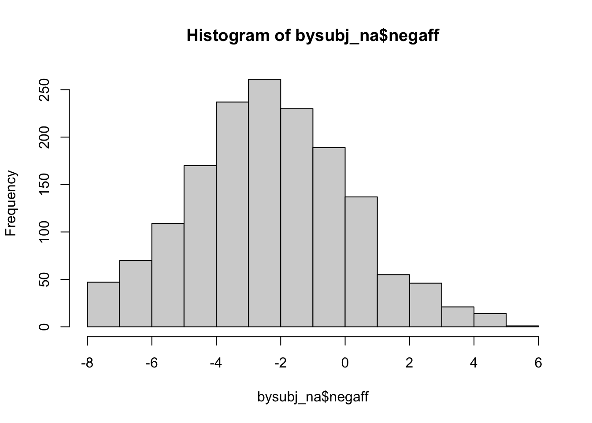
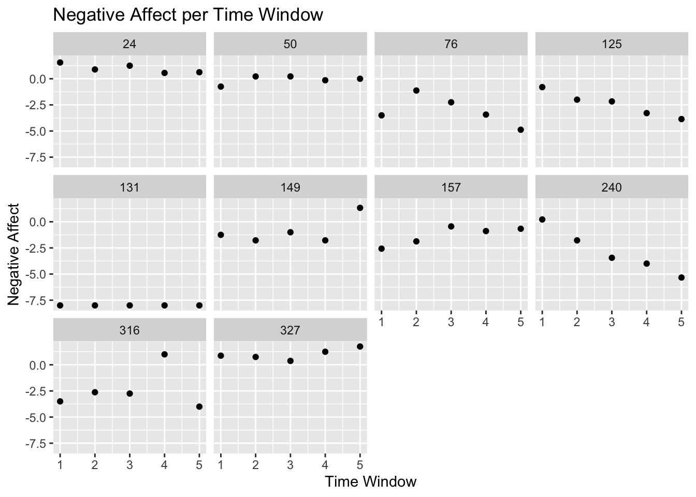
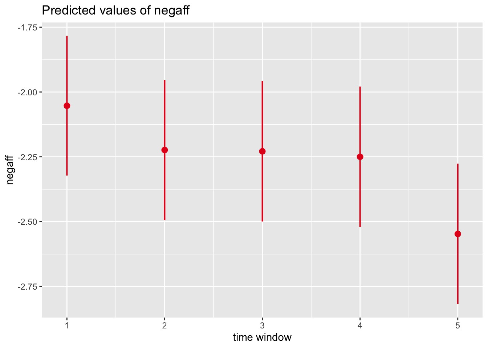
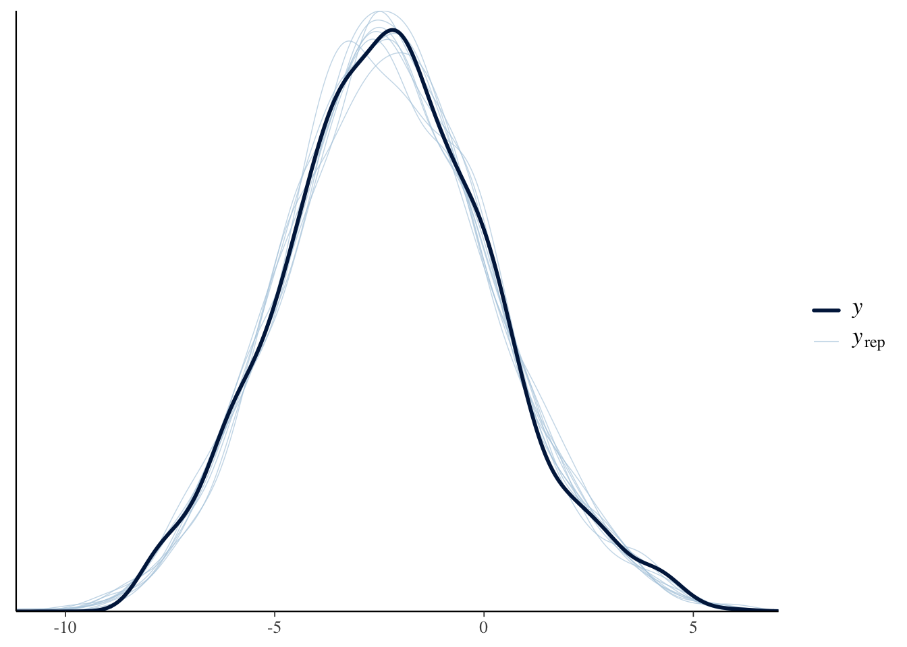
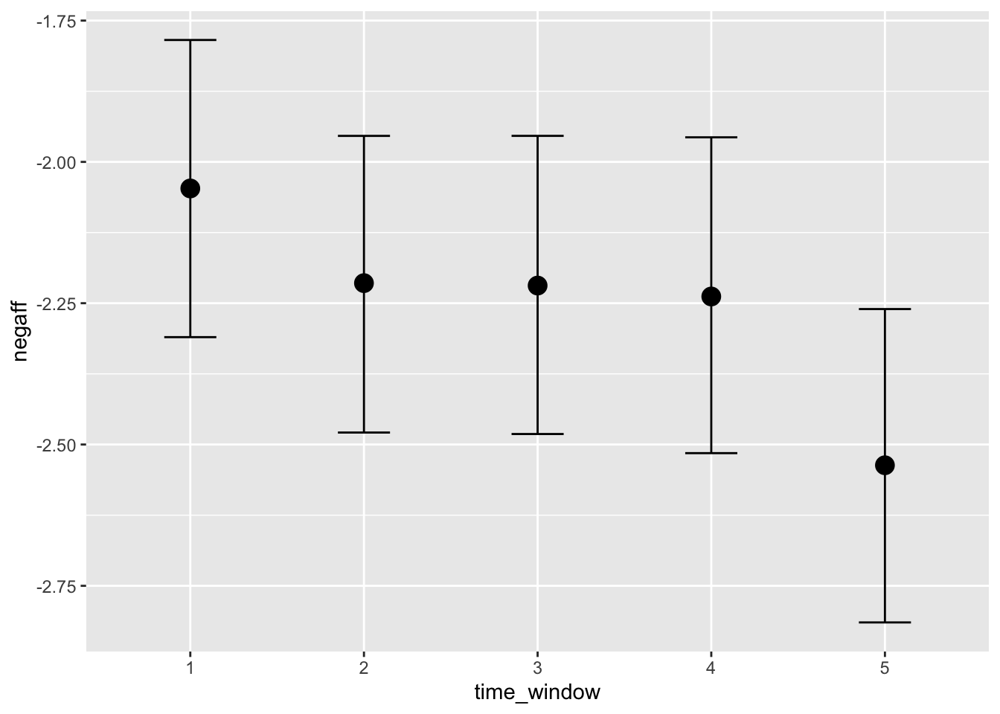

suppressPackageStartupMessages({
library(tidyverse)
library(here)
library(rio)
library(brms)
library(cmdstanr)
library(lme4)
library(sjPlot)
})Variazione dell’umore durante il giorno
Disegno dello Studio
Lo studio utilizza il metodo dell’Ecological Momentary Assessment (EMA), con 5 rilevazioni giornaliere effettuate una volta alla settimana per un periodo di due mesi.
Misurazione dell’umore momentaneo
L’umore viene valutato tramite 4 item che chiedono al partecipante di indicare, al momento della rilevazione, quanto si sente:
- Nervoso
- Turbato
- Soddisfatto
- Felice
Le risposte vengono registrate su una scala Likert a 5 passi, con i seguenti livelli:
- Per niente
- Poco
- Moderatamente
- Abbastanza
- Molto
Analisi dei dati
Importo i dati:
df <- rio::import(here::here("data", "mood_ema.csv"))glimpse(df)Rows: 12,722
Columns: 18
$ day <int> 2, 2, 3, 3, 3, 3, 4, 4, 4, 4, 5, 5, 5, 6, 6, 6, 7, 7, 7, 7…
$ bysubj_day <int> 1, 1, 2, 2, 2, 2, 3, 3, 3, 3, 4, 4, 4, 5, 5, 5, 6, 6, 6, 6…
$ date <IDate> 2022-04-09, 2022-04-09, 2022-04-16, 2022-04-16, 2022-04-…
$ time_window <int> 2, 3, 2, 3, 4, 5, 2, 3, 4, 5, 2, 4, 5, 2, 4, 5, 1, 2, 3, 4…
$ context <int> -1, 0, 0, 1, 1, -1, 0, 1, -1, 0, -1, 0, 0, -2, 0, 1, -1, 0…
$ nervous <int> 4, 3, 3, 3, 3, 4, 2, 2, 4, 2, 4, 4, 4, 3, 3, 4, 4, 2, 4, 2…
$ upset <int> 3, 3, 3, 2, 4, 4, 3, 2, 4, 4, 5, 4, 4, 4, 3, 4, 4, 3, 4, 3…
$ satisfied <int> 2, 3, 2, 2, 2, 2, 2, 2, 2, 2, 2, 2, 2, 2, 2, 3, 2, 2, 2, 2…
$ happy <int> 1, 2, 4, 4, 2, 1, 3, 4, 1, 3, 2, 4, 1, 2, 2, 2, 2, 2, 1, 3…
$ scs_pos_1 <int> 3, 3, 5, 2, 3, 2, 2, 2, 2, 1, 3, 4, 5, 1, 2, 2, 4, 4, 3, 3…
$ scs_neg_2 <int> 4, 4, 6, 5, 5, 5, 3, 3, 4, 4, 5, 5, 4, 5, 4, 4, 4, 3, 5, 4…
$ scs_pos_3 <int> 6, 6, 6, 6, 6, 5, 5, 5, 5, 6, 4, 5, 4, 5, 5, 5, 5, 5, 4, 4…
$ scs_neg_4 <int> 3, 3, 3, 2, 4, 3, 3, 5, 4, 2, 5, 4, 5, 5, 3, 4, 4, 4, 4, 4…
$ scs_neg_5 <int> 2, 3, 4, 4, 5, 5, 5, 3, 4, 4, 5, 5, 5, 4, 4, 4, 4, 4, 6, 4…
$ scs_pos_6 <int> 4, 4, 5, 4, 4, 4, 5, 4, 4, 5, 2, 4, 4, 4, 4, 5, 4, 4, 4, 4…
$ scs_pos_7 <int> 3, 3, 4, 4, 4, 3, 5, 4, 3, 4, 2, 3, 2, 4, 4, 3, 2, 4, 2, 4…
$ scs_neg_8 <int> 5, 4, 5, 4, 5, 4, 3, 5, 5, 5, 5, 4, 5, 4, 4, 4, 4, 4, 4, 4…
$ id <int> 36, 36, 36, 36, 36, 36, 36, 36, 36, 36, 36, 36, 36, 36, 36…Creo la variabile neg_aff in cui combino i valori dei 4 item che misurano l’umore momentaneo:
df <- df |>
mutate(
neg_aff = upset + nervous - satisfied - happy
) Dato che mi interessa la variazione dell’umore momentaneo all’interno della giornata, per semplificare l’analisi, calcolo solo 5 valori per ciascun soggetto, uno per ciascun diverso momento del giorno:
bysubj_na <- df |>
group_by(id, time_window) |>
summarize(
negaff = mean(neg_aff)
) |>
drop_na()`summarise()` has grouped output by 'id'. You can override using the `.groups`
argument.head(bysubj_na)# A tibble: 6 × 3
# Groups: id [2]
id time_window negaff
<int> <int> <dbl>
1 1 1 -3.5
2 1 2 -4.57
3 1 3 -4.5
4 1 4 -6.5
5 1 5 -5.88
6 2 1 -4 In questo modo il dataset ha un numero totale di osservazioni pari a:
nrow(bysubj_na)[1] 1587Visualizzo la distribuzione dei valori dell’umore momentaneo:
hist(bysubj_na$negaff)
Nei dati, la variabile time_window è una variabile qualitativa con 5 livelli, che corrispondono ai diversi momenti temporali delle rilevazioni giornaliere (per es. la prima rilevazione era nella fascia oraria dalle 9:30 alle 10:30); l’ultima era tra le 18:30 e le 19:30. Con l’istruzione successiva specifico che la variabile time_window è una variabile qualitativa.
bysubj_na$time_window <- factor(bysubj_na$time_window)Effett medio
Esaminiamo il livello medio dell’umore momentaneo in fuzione del momento della giornata:
bysubj_na |>
group_by(time_window) |>
summarize(
avg_na = mean(negaff)
)# A tibble: 5 × 2
time_window avg_na
<fct> <dbl>
1 1 -2.05
2 2 -2.22
3 3 -2.23
4 4 -2.25
5 5 -2.55I valori medi suggeriscono che il Negative Affect diminuisce tra la prima notifica (la mattina) e l’ultima notifica (la sera).
Differenze individuali
Ci sono però tante differenze individuali. Esaminiamo i dati di 10 soggetti presi a caso:
# Filtrare i soggetti con almeno 5 valori di time_window
bysubj_filtered <- bysubj_na %>%
group_by(id) %>% # Raggruppa per id
filter(n_distinct(time_window) == 5) %>% # Mantieni solo soggetti con 5 time_window distinti
ungroup() # Rimuovi il raggruppamento
# Visualizzare le prime righe del dataset filtrato
glimpse(bysubj_filtered)Rows: 1,570
Columns: 3
$ id <int> 1, 1, 1, 1, 1, 2, 2, 2, 2, 2, 3, 3, 3, 3, 3, 4, 4, 4, 4, 4…
$ time_window <fct> 1, 2, 3, 4, 5, 1, 2, 3, 4, 5, 1, 2, 3, 4, 5, 1, 2, 3, 4, 5…
$ negaff <dbl> -3.500000, -4.571429, -4.500000, -6.500000, -5.875000, -4.…set.seed(42)
# Selezionare 10 ID casuali
sample_ids <- bysubj_filtered %>%
distinct(id) %>% # Ottenere gli ID unici
sample_n(10) %>% # Selezionare 10 ID casuali
pull(id) # Estrarre il vettore di ID
# Filtrare il dataset per includere solo gli ID selezionati
bysubj_subset <- bysubj_na %>%
filter(id %in% sample_ids)# Convertire time_window in numerico
bysubj_subset <- bysubj_subset %>%
mutate(time_window = as.numeric(as.character(time_window)))
# Creare il grafico
ggplot(bysubj_subset, aes(x = time_window, y = negaff)) +
geom_point() +
scale_x_continuous(breaks = 1:5) + # Intervalli corretti per time_window
facet_wrap(~id) +
labs(
title = "Negative Affect per Time Window",
x = "Time Window",
y = "Negative Affect"
)
Modello statistico
Per rendere conto delle variazioni individuali e la struttura dei dati utilizzo un modello multilivello, il quale stima l’effetto complessivo di time_window, tenendo però in considerazione le differenze individuali.
fm <- lmer(negaff ~ time_window + (1 | id), bysubj_na)summary(fm)Linear mixed model fit by REML ['lmerMod']
Formula: negaff ~ time_window + (1 | id)
Data: bysubj_na
REML criterion at convergence: 5612.8
Scaled residuals:
Min 1Q Median 3Q Max
-3.9940 -0.5221 -0.0446 0.5051 4.9983
Random effects:
Groups Name Variance Std.Dev.
id (Intercept) 5.119 2.263
Residual 1.035 1.017
Number of obs: 1587, groups: id, 326
Fixed effects:
Estimate Std. Error t value
(Intercept) -2.05279 0.13744 -14.936
time_window2 -0.17076 0.08091 -2.111
time_window3 -0.17592 0.08091 -2.174
time_window4 -0.19690 0.08099 -2.431
time_window5 -0.49454 0.08099 -6.106
Correlation of Fixed Effects:
(Intr) tm_wn2 tm_wn3 tm_wn4
time_windw2 -0.287
time_windw3 -0.287 0.500
time_windw4 -0.286 0.499 0.499
time_windw5 -0.286 0.499 0.499 0.499plot_model(fm, type = "pred", terms = "time_window")
Il modello statistico precedente ipotizza che l’andamento dell’umore in funzione del momento della giornata sia uguale per tutti i partecipanti. L’unica differenza tra i partecipanti è il livello medio di umore. Ma abbiamo visto prima che questo non è vero per i dati del campione: l’andamento dell’umore in funzione del momento della giornata è diverso per ciascun partecipante.
Per rendere conto di queste differenze, il modello dovrebbe essere scritto nel modo seguente:
fm1 <- lmer(negaff ~ time_window + (1 + time_window | id), bysubj_na)Tuttavia, il modello precedente stimato con l’approccio frequentista produce un errore, in quanto il numero di parametri che devono essere stimati è maggiore del numero dei dati disponibili.
È invece possibile stimare il modello usando un approccio bayesiano:
mod <- brm(
negaff ~ time_window + (1 + time_window | id),
family = gaussian(),
bysubj_na,
backend = "cmdstanr",
iter = 4000, # Aumenta il numero di iterazioni
warmup = 2000, # Aumenta il periodo di warmup
chains = 4, # Usa più catene
cores = 8, # Usa più core per velocizzare il calcolo
prior = c(
prior(normal(0, 1), class = "b"), # Priori per i coefficienti fissi
prior(student_t(3, 0, 2), class = "sd"), # Priori per deviazioni standard (random effects)
prior(student_t(3, 0, 2), class = "sigma") # Priori per l'errore residuo
)
)Esaminiamo la bontà di adattamento del modello ai dati.
pp_check(mod)Using 10 posterior draws for ppc type 'dens_overlay' by default.
Esaminiamo i risultati ottenuti dal modello bayesiano.
summary(mod) Family: gaussian
Links: mu = identity; sigma = identity
Formula: negaff ~ time_window + (1 + time_window | id)
Data: bysubj_na (Number of observations: 1587)
Draws: 4 chains, each with iter = 4000; warmup = 2000; thin = 1;
total post-warmup draws = 8000
Multilevel Hyperparameters:
~id (Number of levels: 326)
Estimate Est.Error l-95% CI u-95% CI Rhat
sd(Intercept) 2.30 0.10 2.11 2.50 1.00
sd(time_window2) 0.77 0.13 0.52 1.05 1.03
sd(time_window3) 0.87 0.12 0.63 1.12 1.03
sd(time_window4) 1.10 0.12 0.87 1.34 1.02
sd(time_window5) 1.15 0.11 0.95 1.38 1.02
cor(Intercept,time_window2) -0.18 0.10 -0.36 0.03 1.00
cor(Intercept,time_window3) -0.15 0.10 -0.32 0.05 1.01
cor(time_window2,time_window3) 0.88 0.07 0.72 0.98 1.01
cor(Intercept,time_window4) -0.09 0.09 -0.24 0.09 1.01
cor(time_window2,time_window4) 0.74 0.08 0.57 0.89 1.01
cor(time_window3,time_window4) 0.80 0.07 0.65 0.91 1.00
cor(Intercept,time_window5) -0.09 0.08 -0.25 0.08 1.00
cor(time_window2,time_window5) 0.34 0.12 0.06 0.55 1.00
cor(time_window3,time_window5) 0.34 0.11 0.08 0.53 1.01
cor(time_window4,time_window5) 0.68 0.07 0.54 0.81 1.00
Bulk_ESS Tail_ESS
sd(Intercept) 1306 3102
sd(time_window2) 226 233
sd(time_window3) 238 323
sd(time_window4) 244 308
sd(time_window5) 302 428
cor(Intercept,time_window2) 2814 4015
cor(Intercept,time_window3) 1882 4259
cor(time_window2,time_window3) 431 1181
cor(Intercept,time_window4) 1090 3460
cor(time_window2,time_window4) 636 1238
cor(time_window3,time_window4) 750 2916
cor(Intercept,time_window5) 1866 5460
cor(time_window2,time_window5) 581 1231
cor(time_window3,time_window5) 967 2421
cor(time_window4,time_window5) 1846 3722
Regression Coefficients:
Estimate Est.Error l-95% CI u-95% CI Rhat Bulk_ESS Tail_ESS
Intercept -2.05 0.13 -2.31 -1.78 1.00 1155 2574
time_window2 -0.17 0.08 -0.32 -0.02 1.00 5214 6300
time_window3 -0.17 0.08 -0.33 -0.01 1.00 5396 5963
time_window4 -0.19 0.09 -0.36 -0.02 1.00 4318 5482
time_window5 -0.49 0.09 -0.66 -0.31 1.00 5656 5821
Further Distributional Parameters:
Estimate Est.Error l-95% CI u-95% CI Rhat Bulk_ESS Tail_ESS
sigma 0.78 0.05 0.66 0.86 1.03 162 147
Draws were sampled using sample(hmc). For each parameter, Bulk_ESS
and Tail_ESS are effective sample size measures, and Rhat is the potential
scale reduction factor on split chains (at convergence, Rhat = 1).Rappresentiamo l’incertezza della stima:
conditional_effects(mod, "time_window")
Grandezza dell’effetto
# Estrarre la varianza degli effetti casuali e residui
var_comp <- as.data.frame(VarCorr(fm))
var_subject <- var_comp$vcov[var_comp$grp == "id"] # Varianza degli effetti casuali
var_residual <- attr(VarCorr(fm), "sc")^2 # Varianza residua# Calcolo della deviazione standard residua
sd_residual <- sqrt(var_residual)
# Calcolare Cohen's d per ciascun livello di time_window
cohen_d <- coef(summary(fm))[, "Estimate"] / sd_residual
# Visualizza i risultati
cohen_d (Intercept) time_window2 time_window3 time_window4 time_window5
-2.0178478 -0.1678502 -0.1729236 -0.1935451 -0.4861220 Bontà d’adattamento del modello
# Predire i valori fissi
fixed_preds <- predict(fm, re.form = NA) # Solo effetti fissi
var_fixed <- var(fixed_preds) # Varianza spiegata dagli effetti fissi# Calcolo R^2
var_total <- var_subject + var_residual + var_fixed # Varianza totale
r2_marginal <- var_fixed / var_total # R^2 marginale (fissi)
r2_conditional <- (var_fixed + var_subject) / var_total # R^2 condizionato (fissi + casuali)
cat("R^2 marginale:", r2_marginal, "\n")R^2 marginale: 0.004154932 cat("R^2 condizionato:", r2_conditional, "\n")R^2 condizionato: 0.8325231